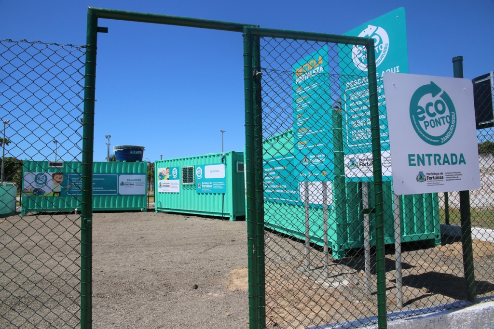

<div class="container-fluid flex-column background d-flex justify-content-center align-items-center p-3">
    <div class="sobre">
        <div class="card p2 text-center">
            
            <div class="card-body text-light bg-dark">
                <h3 class="card-title text-center">Ecopontos</h3>
                <p class="card-text">
                    Iniciada em 2015, a implantação de Ecopontos na cidade vem mudando o comportamento
                    da população quanto ao descarte de resíduos sólidos e à coleta seletiva, incentivando
                    a reciclagem de materiais. Os equipamentos são locais de entrega voluntária de materiais
                    recicláveis e outros tipos de resíduos em Fortaleza.
                </p>

                <p class="card-text">
                    Nos Ecopontos, a população pode fazer o descarte gratuito de:
                </p>

                <ul class="list-group list-group-flush mb-3">
                    <li class="list-group-item text-warning-emphasis">Pequenas proporções de entulho</li>
                    <li class="list-group-item text-warning-emphasis">Restos de poda</li>
                    <li class="list-group-item text-warning-emphasis">Móveis e estofados velhos</li>
                    <li class="list-group-item text-warning-emphasis">Papelão</li>
                    <li class="list-group-item text-warning-emphasis">Plástico</li>
                    <li class="list-group-item text-warning-emphasis">Vidro</li>
                    <li class="list-group-item text-warning-emphasis">Metal</li>
                </ul>

                <p class="card-text">
                    É nos Ecopontos onde a população pode ter acesso, desde de 2016, ao benefício do programa
                    Recicla Fortaleza, que dá desconto na conta de energia pela troca de resíduos recicláveis,
                    resultado de parceria entre a Prefeitura de Fortaleza e a Enel Distribuição Ceará (Enel).
                </p>

                <p class="card-text">
                    Para ter acesso aos benefícios, é simples. Basta que o fortalezense procure um dos ecopontos
                    mais próximo, levando a conta da Enel, para fazer o cadastro e receber o cartão Recicla Fortaleza.
                    Daí, é separar os resíduos recicláveis e levá-los até o ecoponto para pesagem, lembrando de
                    armazená-los sem sobra de alimentos ou produtos para não atrair insetos e gerar mau cheiro.
                    No Ecoponto, o cidadão confere a tabela de valores dos resíduos recicláveis, pois o crédito será
                    calculado de acordo o peso e os tipos de materiais, levando em consideração o mercado.
                </p>

                <h6 class="text-center">Horário de Funcionamento:</h6>

                <p class="card-text">Segunda a sábado: de 8 às 12 horas e de 14 às 17 horas.</p>

                <p class="card-text"><small>Recicla Fortaleza: seus resíduos recicláveis valem crédito!</small></p>
            </div>
        </div>

        <div class="mt-4 p-1">
            <h3 class="text-center my-3">Selecione seu bairro e veja o endereço dos ecopontos</h3>

            <div class="mb-3 text-center p-2">
                <label for="selectBairro" class="form-label text-light-emphasis">Escolha seu bairro</label>
                <select id="selectBairro" class="form-select form-select-sm">
                  <option value="" selected disabled>Selecione um bairro</option>
                </select>
            </div>

            <div class="card p-2 d-none">
                <div class="card-body">
                  <p class="card-text"><strong>Endereço:</strong> <span id="endereco"></span></p>
                </div>
            </div>
        </div>
    </div>
</div>